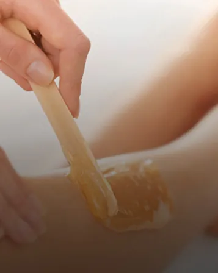
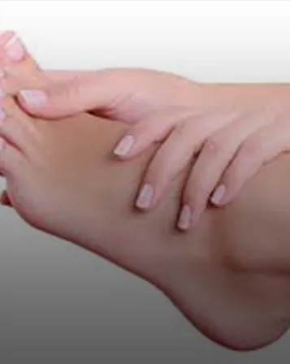
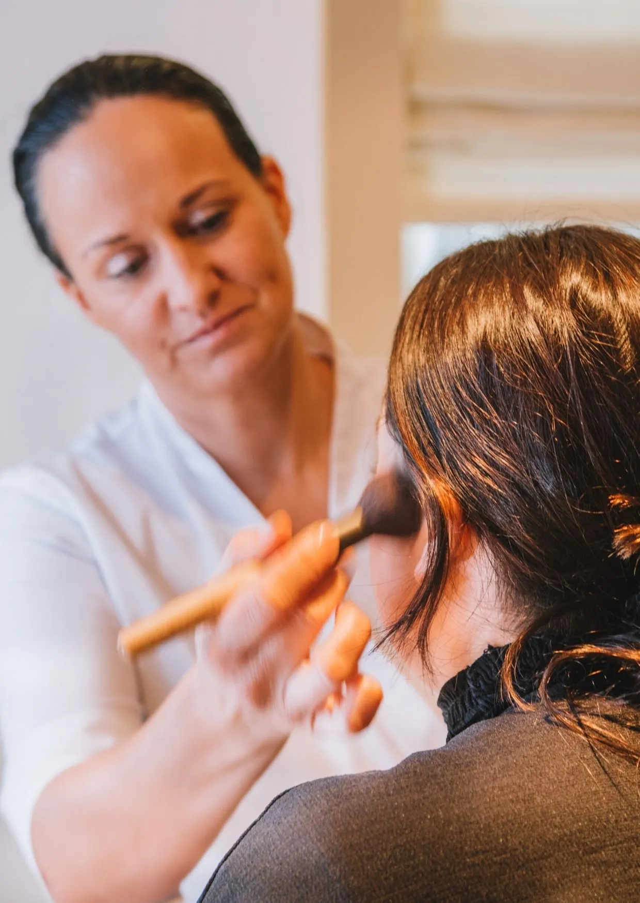

- Home
- Behandelingen
- Verwennen
Rust
Verwennen
Van kop tot teen verzorgd worden. Van zodra je binnenkomt, vergeet je de drukte van de dag. Alleen, of met twee in de duo-cabine.
Arrangementen
Een moment voor jezelf
Elk arrangement sluit af met een drankje in de relaxruimte. Feeling en Relax kan je ook met twee boeken.
Lichaam
Massage & lichaam
Laat de spanning uit je lichaam wegvloeien, of doezel weg onder een warme pakking.
Ontharing
Hars & wax
Traditionele hars voor grotere zones, hot wax voor gevoelige zones.

Laserontharing · in samenwerking met Haarlaser Team
Een erkende laserspecialist komt op vaste weken naar het instituut. Na 6 tot 9 sessies is 80 tot 90% van de behandelde haren definitief weg. Gratis test- en uitlegsessie.
Prijzen via haarlaser.team ↗Handen & voeten
Manicure & pedicure
Pedicure enkel in combinatie met een gelaatsverzorging. Gellak wordt niet meer aangeboden.

Make-up
Workshops & feestmake-up
Leer werken met minerale make-up van Jane Iredale, altijd individueel.
